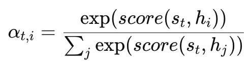
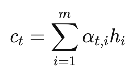
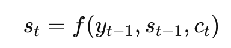

Encoder-Decoder
Encoder-Decoder（编码器-解码器）
一、问题本质：序列到序列建模
sequence（序列）：一组有顺序的数据（如句子）
conditional probability（条件概率）：在输入已知的情况下预测输出
Seq2Seq(Sequence-to-sequence)（序列到序列）输入一个序列，输出另一个序列
P(y1,y2,…,yn∣x1,x2,…,xm)
P(y1,…,yn∣x)=P(y1∣x)⋅P(y2∣y1,x)⋅P(y3∣y1,y2,x)⋯
第1步：生成第一个词
第2步：基于前面的词生成下一个
…
逐步生成（autoregressive generation）
二、Encoder–Decoder 的理论结构

Encoder–Decoder 是一种将输入序列映射为中间表示（latent representation），再生成输出序列的结构
x → Encoder → c → Decoder → y
三、Encoder（RNN版本）
ht=f(xt,ht−1)
x_t：第 t 个输入词（token）
h_t：隐藏状态（hidden state）
f：RNN / LSTM / GRU（状态更新函数）
当前理解 = 当前输入 + 之前理解（一步一步读句子，并不断更新理解）
c=hm
c：上下文向量（context vector）
用最后一个状态代表整句话
所有信息被压缩成一个向量 c
四、Decoder（RNN版本）
st=f(yt−1,st−1,c)
st：状态
yt：输出
c：输入信息
P(yt)=softmax(Wst)
把一个向量变成概率分布：
1 | [2.0, 1.0, 0.1] → [0.7, 0.2, 0.1] |
模型在问：下一个词最可能是什么？
五、核心问题：为什么 RNN 不够好
信息压缩（information bottleneck）
长距离依赖（long-range dependency）
计算无法并行（sequential computation）
信息路径：x₁ → x₂ → … → xₘ → c → decoder
路太长：早期信息会消失
六、Attention（关键机制）
Encoder输出：h1,h2,…,hm
每个 h_i：输入第 i 个词的表示，这是 encoder 的输出序列
每个词都有一个“理解向量”
score(st,hi)
当前要生成的状态（s_t）vs输入第 i 个词（h_i）
“这个词和我现在要生成的内容相关吗？”
softmax（归一化）

把所有 score 变成：加起来 = 1 的概率
我应该关注哪个词？
关注多少？
加权求和

用权重组合所有输入信息：重点词影响更大，无关词影响更小
完整流程
step1:拿出当前状态
$$
s_t
$$
表示“我现在要生成第 t 个词”
Step2:和每个输入词比较
s_t vs h_1
s_t vs h_2
…
Step3:得到权重
α₁, α₂, …, α_m
Step4:加权求和
c_t = α₁h₁ + α₂h₂ + …
step5:用于生成

本质
从所有输入中“选重点信息”
Attention 是一种 动态信息检索机制
RNN：一个向量 c
Attention：每一步都有不同的 c_t